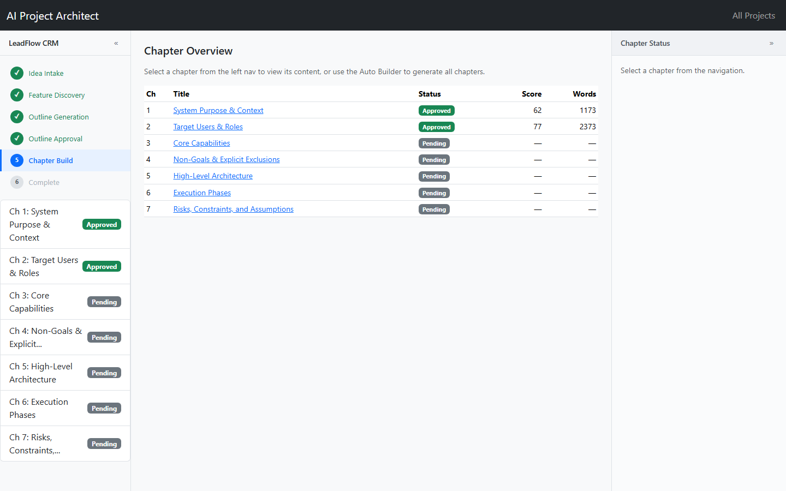
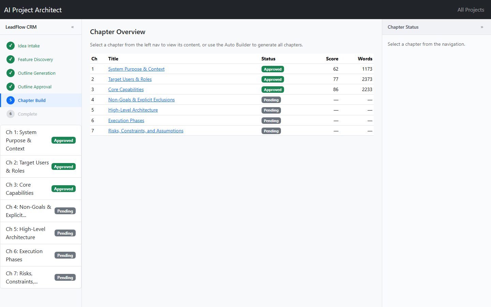
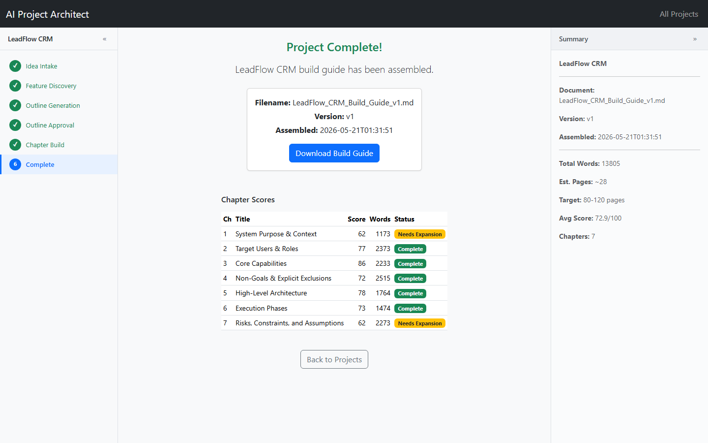
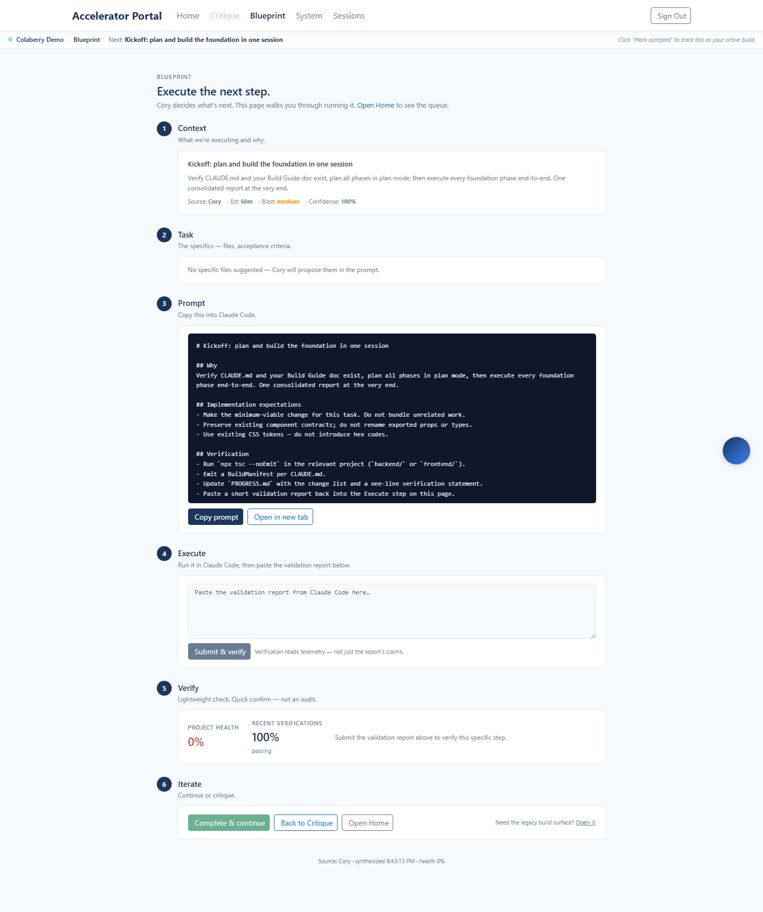
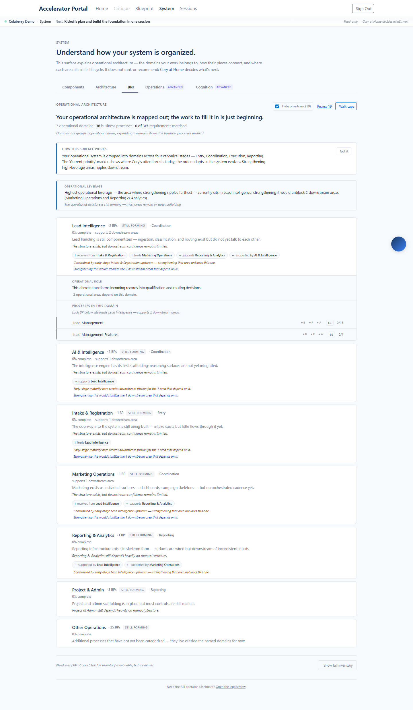
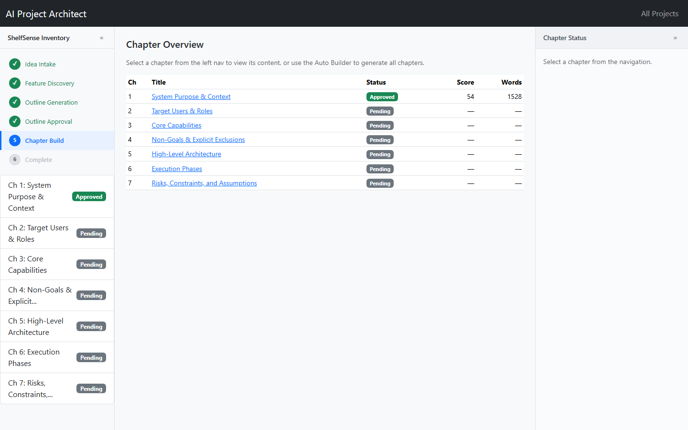
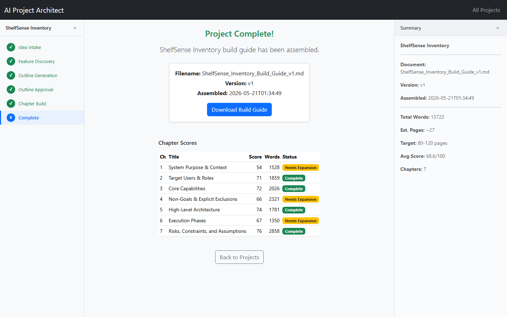
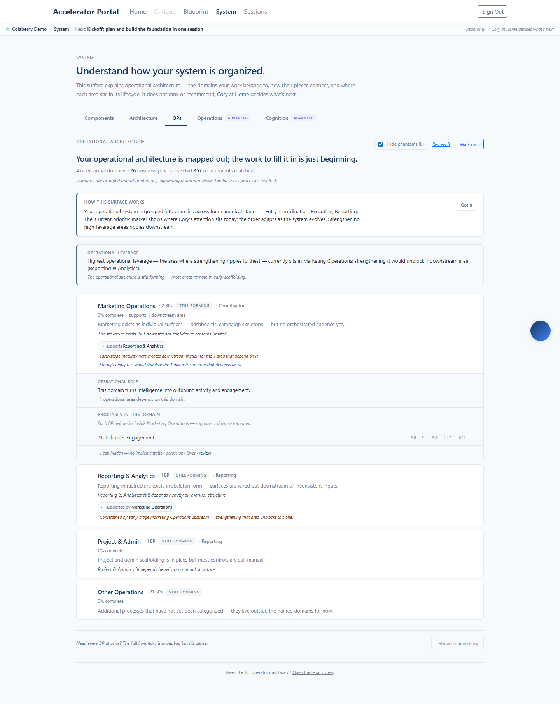
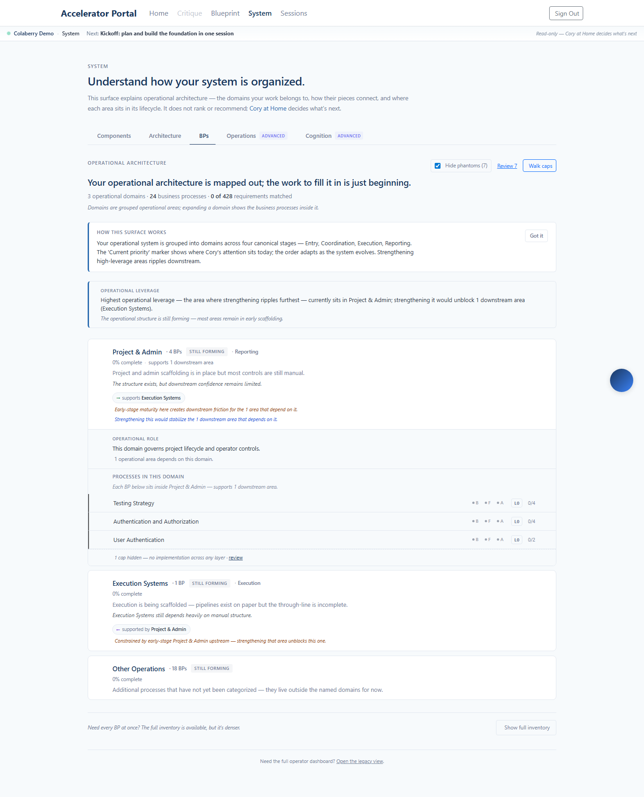

The earlier report used the portal's fast OpenAI generate path (~1,400-word docs). This run uses the actual requirements-document API — the AI Project Architect at advisor.colaberry.ai, an 8-phase pipeline that writes the document chapter by chapter (each chapter gated to ≥1,750 words), which is why it takes the longer build time.
POST /api/portal/project/architect-build kicks off the Architect (idea_intake → feature_discovery → outline → chapter_build → quality_gates → final_assembly → complete)GET /api/portal/project/architect-status, on completion, downloads the build guide (getArchitectDocument) and saves it to the projectGET /capabilities + /requirements/map confirm the populated project (counts below)Each retrieved document is ~100,000 characters (~27–28 pages), versus ~1,400 words from the fast path. Build-out ran capabilities-only (throwaway public repo connected to satisfy the structural requirement; requirements are not matched to code files).
| Run | Architect project | Result | Document retrieved | Capabilities | Features | Requirements |
|---|---|---|---|---|---|---|
| Run 1 LeadFlow CRM |
leadflow-crm |
PASS | 101,970 chars | 36 | 177 | 315 |
| Run 2 ShelfSense Inventory |
shelfsense-inventory |
PASS | 108,442 chars | 26 | 124 | 357 |
| Run 3 CareBridge Intake |
carebridge-intake |
PASS | 106,855 chars | 24 | 66 | 428 |
Architect project leadflow-crm · account ali+demo-run1@colaberry.com





Architect project shelfsense-inventory · account ali+demo-run2@colaberry.com



Architect project carebridge-intake · account ali+demo-run3@colaberry.com

Three magic-link URLs were written to scripts/.demo_login_urls.txt (kept out of git). Each lands on a portal whose project was built from an Architect document — open Blueprint and System to see the capabilities.
The earliest Architect phases (idea intake → outline, ~90s total) are not shown because polling attached once the builds had already reached chapter writing. The chapter-build, completion, and built-out portal surfaces are captured.